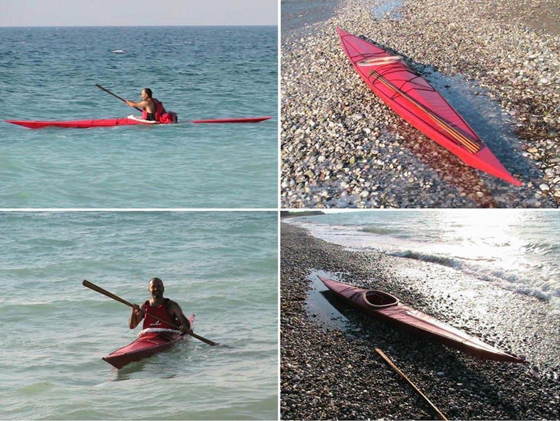

| (New) Sea Ranger by Emmanuel Gerogiannakis (GR) | Menu Last Page Next Page |
|
 Emmanuel, from Rhodes Island, Greece is seen paddling his new Sea Ranger folder ( 17.6ft X 19.5in / 5.36m X 49.5cm) in the Aegean Sea. He reports that the kayak is quite stable considering it's narrow beam. Construction is of Aluminum, HDPE and PVC. This is his second SOF. His first being an aluminum, wood, and canvas FAP-16 design also built from the manual.
|
|